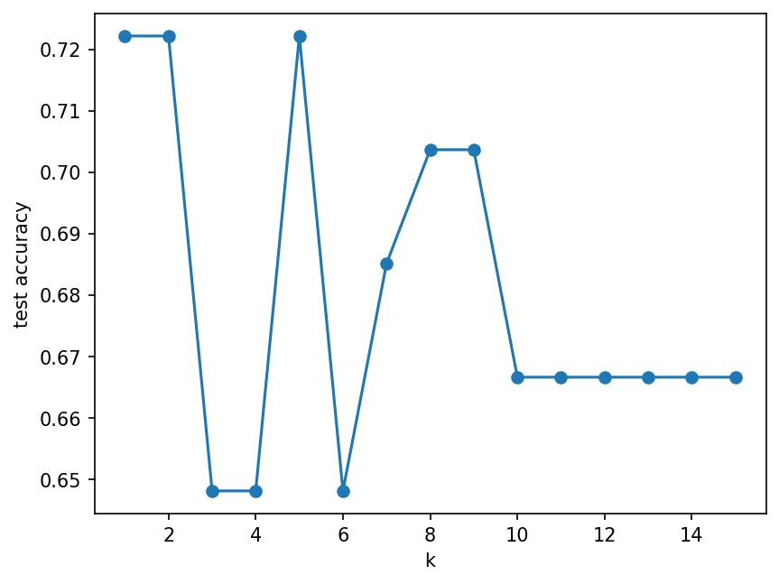

Hand calculations first, then code
Introduction to Data Science and Machine Learning · Md Mahbub E Noor · University of Barishal
mean_absolute_error(y_te, pred) model.score(X_te, y_te)
Four small calculations on paper. They make sure you know what the code is doing.
Four tasks in a new notebook, Practice1. Work in pairs, one keyboard, switch every task.
We compare answers together. Being wrong and finding out why is the point of today.
Write every step. A calculator is fine; Python is not, yet.
Actual: 10, 12, 15, 20. Predicted: 11, 12, 13, 22. Compute every error and the MAE.
x: 1, 2, 3 and y: 3, 5, 10. Find the least-squares slope and intercept with the table method.
Points A (1,1), (2,2), (1,4) and B (5,5), (6,3), (5,2). New point (4, 3.5). Predict with k = 1, 3 and 5.
Rules: petal width ≤ 0.75: setosa; else petal length ≤ 4.75: versicolor; else virginica. Classify (1.4, 0.2), (4.9, 1.5), (4.5, 1.3), given as (length, width).
Use only built-in datasets, so everything works offline. Fix random_state=0 so we can compare answers.
Diabetes data: for each of the 10 features alone, fit LinearRegression and print test MAE. Which feature is best?
Wine data: test accuracy of k-NN for k = 1 to 15. Plot accuracy against k.
Wine data: training and test accuracy of trees with max_depth 1 to 6. Where does test accuracy stop improving?
Breast cancer data: compare k-NN, a depth-3 tree and GaussianNB on the same split. Report a small table.
Show after students have attempted Part A and Part B.
Error = actual - predicted. MAE = average size of the errors = 5 / 4 = 1.25.
# MAE = (1 + 0 + 2 + 2) / 4 # = 5 / 4 = 1.25
| actual | predicted | error | |error| |
|---|---|---|---|
| 10 | 11 | -1 | 1 |
| 12 | 12 | 0 | 0 |
| 15 | 13 | 2 | 2 |
| 20 | 22 | -2 | 2 |
| MAE | 1.25 |
Next row: arrow key or the ▶ button. Predict it first!
Means: x = 2, y = 6. slope = 7 / 2 = 3.5. intercept = 6 - 3.5 × 2 = -1. Line: y = 3.5x - 1.
from sklearn.linear_model import LinearRegression m = LinearRegression().fit([[1], [2], [3]], [3, 5, 10]) print(m.coef_.round(2), round(m.intercept_, 2))
[3.5] -1.0
| x | y | x - 2 | y - 6 | product | (x - 2)² |
|---|---|---|---|---|---|
| 1 | 3 | -1 | -3 | 3 | 1 |
| 2 | 5 | 0 | -1 | 0 | 0 |
| 3 | 10 | 1 | 4 | 4 | 1 |
| sum | 7 | 2 |
Next row: arrow key or the ▶ button. Predict it first!
k = 1: B. k = 3: B, B, B, so B. k = 5: three B and two A, so B. Ties in distance do not matter here: both tied points are B.
from sklearn.neighbors import KNeighborsClassifier
X = [[1, 1], [2, 2], [1, 4], [5, 5], [6, 3], [5, 2]]
y = ["A", "A", "A", "B", "B", "B"]
for k in [1, 3, 5]:
knn = KNeighborsClassifier(n_neighbors=k).fit(X, y)
print(k, knn.predict([[4, 3.5]]))1 ['B'] 3 ['B'] 5 ['B']
| rank | point | class | distance |
|---|---|---|---|
| 1 | (5, 2) | B | 1.80 |
| 2 | (5, 5) | B | 1.80 |
| 3 | (6, 3) | B | 2.06 |
| 4 | (2, 2) | A | 2.50 |
| 5 | (1, 4) | A | 3.04 |
| 6 | (1, 1) | A | 3.91 |
Next row: arrow key or the ▶ button. Predict it first!
| Flower (length, width) | Question 1: width ≤ 0.75? | Question 2: length ≤ 4.75? | Answer |
|---|---|---|---|
| (1.4, 0.2) | yes | not asked | setosa |
| (4.9, 1.5) | no | no (4.9 > 4.75) | virginica |
| (4.5, 1.3) | no | yes | versicolor |
Loop over the columns, keep everything else the same. A fair comparison changes one thing at a time.
from sklearn.datasets import load_diabetes
from sklearn.model_selection import train_test_split
from sklearn.metrics import mean_absolute_error
data = load_diabetes(as_frame=True)
results = {}
for col in data.data.columns:
X_tr, X_te, y_tr, y_te = train_test_split(
data.data[[col]], data.target, test_size=0.25, random_state=0)
pred = LinearRegression().fit(X_tr, y_tr).predict(X_te)
results[col] = round(mean_absolute_error(y_te, pred), 1)
print(sorted(results.items(), key=lambda kv: kv[1]))[('s5', 49.8), ('bp', 50.8), ('s6', 52.7), ('s4', 52.9),
('bmi', 53.3), ('s1', 55.9), ('s3', 56.0), ('s2', 56.3),
('age', 56.8), ('sex', 58.0)]Accuracy depends strongly on k here, and it is low overall. Lecture 12 shows why: the wine features have very different scales.
import matplotlib.pyplot as plt
from sklearn.datasets import load_wine
Xw, yw = load_wine(return_X_y=True)
Xw_tr, Xw_te, yw_tr, yw_te = train_test_split(
Xw, yw, test_size=0.3, random_state=0, stratify=yw)
ks = range(1, 16)
accs = [KNeighborsClassifier(n_neighbors=k).fit(Xw_tr, yw_tr)
.score(Xw_te, yw_te) for k in ks]
plt.plot(list(ks), accs, marker="o")
plt.xlabel("k")
plt.ylabel("test accuracy")
plt.show()
Training accuracy keeps rising to 1.0 · Test accuracy stops improving early · The gap is overfitting · Prefer the shallowest tree with near-best test accuracy
from sklearn.tree import DecisionTreeClassifier
for d in range(1, 7):
t = DecisionTreeClassifier(max_depth=d, random_state=0)
t.fit(Xw_tr, yw_tr)
print(d, round(t.score(Xw_tr, yw_tr), 3),
round(t.score(Xw_te, yw_te), 3))1 0.702 0.667 2 0.927 0.852 3 0.984 0.963 4 1.0 0.944 5 1.0 0.944 6 1.0 0.944
Same split for every model: fair comparison · Scores are close: no single winner by far · Next lectures: test more reliably (11), prepare features (12) · Write results as a small table in your report
from sklearn.datasets import load_breast_cancer
from sklearn.naive_bayes import GaussianNB
Xb, yb = load_breast_cancer(return_X_y=True)
Xb_tr, Xb_te, yb_tr, yb_te = train_test_split(
Xb, yb, test_size=0.3, random_state=0, stratify=yb)
for name, m in [("kNN", KNeighborsClassifier()),
("tree d=3", DecisionTreeClassifier(max_depth=3,
random_state=0)),
("GaussianNB", GaussianNB())]:
m.fit(Xb_tr, yb_tr)
print(name, round(m.score(Xb_te, yb_te), 3))kNN 0.912 tree d=3 0.901 GaussianNB 0.924
Due before Lecture 11 · [date]
Complete any task from Part A or B you did not finish, in your Practice1 notebook.
In a text cell: which hand calculation helped you understand the code most, and why?
Repeat B4 with random_state=1. Did the ranking of the three models change? What does that tell you?